Journal Club: Mapping Synesthetic Sequences in Space
![]()
UniDistance Suisse
UniDistance Suisse
4 Feb 2026
Introduction
Introduction
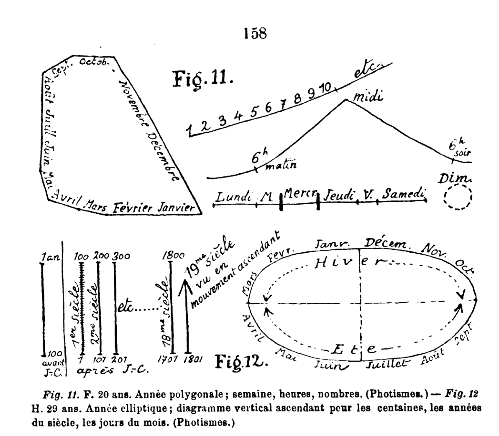
Space-Sequence Synesthesia is a perceptual condition in which ordinal sequences (e.g., numbers, days of the week, or months of the year) are experienced as occupying specific spatial locations (M. C. Price 2009; Rothen et al. 2016; Ward et al. 2018)
Who is a genuine synesthete?
Suggested criteria (Seron et al. 1992; Deroy and Spence 2013)
Conscious
Developmentally early
Automatic
Unidirectional
- Consistent in time
Consistency tests
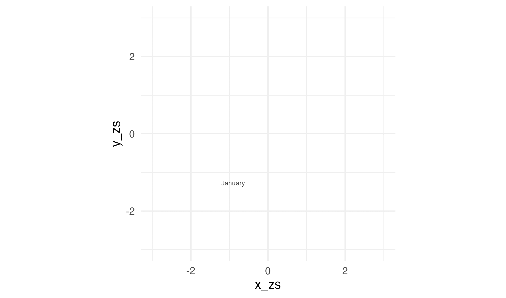
Task: “Click on the spatial location elicited by the present stimulus”
Measure of spatial position’s variability over time (Baron-Cohen et al. 1993)
Triangle area (Rothen et al. 2016)
Limits (i..e Ward et al. 2018) :
High consistency if same or close coordinates
Might favour linear over circular forms
Ordinality between items is ignored
Present study
Optimizing diagnostics from consistency tests

- stage I: Find a method that best classifies Space-Sequence Synaesthesia and Controls with pre-existing data.
- stage II: Make predictions of optimal method for to-be-collected data (Sachdeva et al., 2024, Stage 1 in-principle acceptance)
Methods
| Synaesthetes | N | Age |
|---|---|---|
| (Rothen et al. 2016) | 32 | 23.1 |
| (Ward 2022) | 252 | 37.2 |
| (Van Petersen et al. 2020) | 22 | 23.2 |
| Ward 2 | 90 | NA |
| Total: | 396 |
| Controls | N | Age |
|---|---|---|
| (Rothen et al. 2016) | 37 | 28.2 |
| (Ward 2022) | 213 | 19.9 |
| (Van Petersen et al. 2020) | 21 | 21.6 |
| Ward 2 | 18 | NA |
| Total | 289 |
Coordinates individually standardized (z-scores)
n = 2 excluded because same x or y coordinates across conditions and repetitions. n = 2 excluded for having less than 4 (x,y) points
0.02 % empty trials excluded (i.e. skipped responses)
Feature extraction
Area
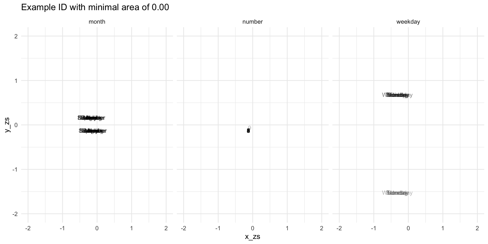
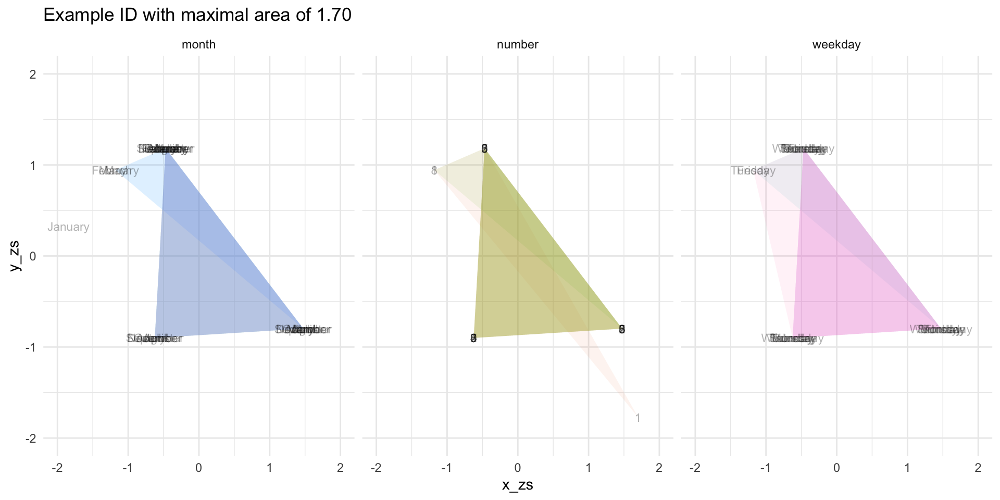
\[ Area = (x1y2 +x2y3 + x3y1 – x1y3 – x2y1 – x3y2) / 2 \tag{1}\]
Perimeter
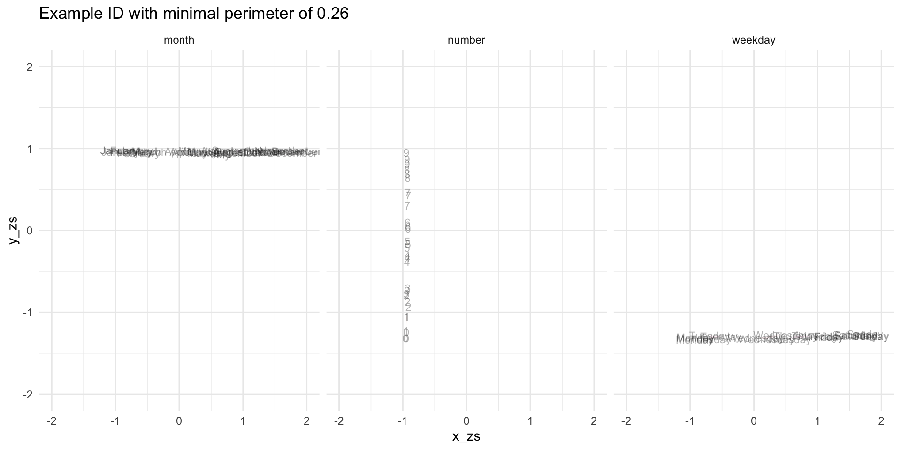
\[ Perimeter = \sqrt{(x2 - x1)^2 + (y2 – y1)^2} + \sqrt{(x3 - x2)^2 + (y3 –y2)^2} + \sqrt{(x1 - x3)^2 + (y1 – y3)^2} \tag{2}\]
Form level
Self-intersections
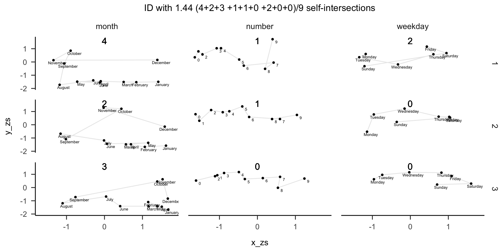
Figure 4: Example slef-intersections
Topological validity (“PostGIS 3.6.2dev Manual,” n.d.)
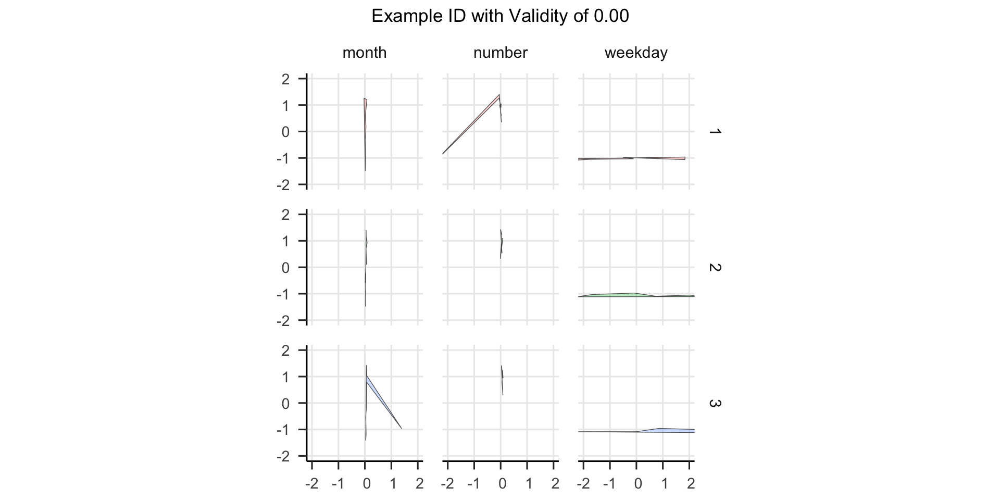
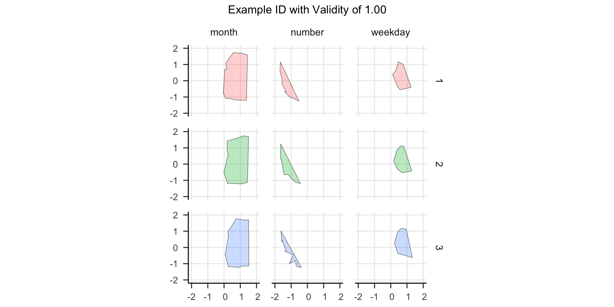
sf simple features package (Pebesma 2018):
Polygon rings are simple (i.e., they do not touch or self-intersect)
Boundary rings to not cross
Boundary rings may only touch points tangentially
Rings that define holes are contained within the exterior ring
Polygon rings must not splits the polygon
Permuted topological validity
Permute the response repetition order
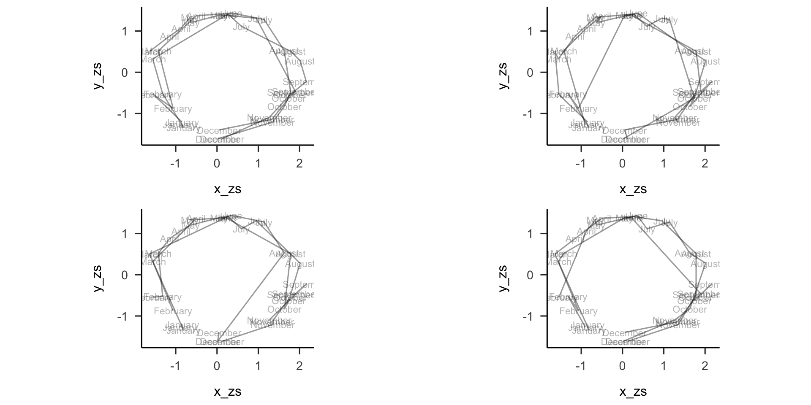
Figure 7
Results
Receiver Operator Characteristics
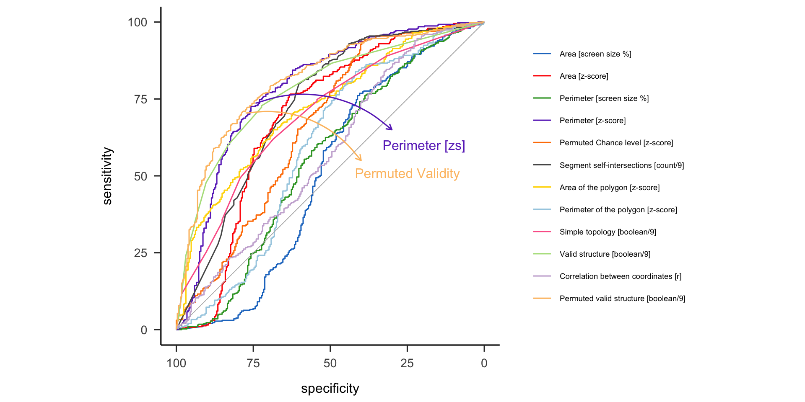
Figure 8: Receiver Operating Characteristic (ROC) curves of all features
Permuted validity and perimeter (D = 1.44, p = 0.15).
Permuted validity vs non permuted (D = 3.28, p < .05).
ROC Table
| Feature | AUC | DP | threshold | sensitivity | specificity | |
|---|---|---|---|---|---|---|
| 12 | Permuted valid structure [boolean/9] | 81.16 | 2.13 | 0.17 | 70.78 | 78.55 |
| 4 | Perimeter [z-score] | 78.8 | 2.06 | 1.73 | 72.54 | 75.78 |
| 10 | Valid structure [boolean/9] | 78.12 | 1.9 | 0.14 | 72.8 | 72.32 |
| 6 | Segment self-intersections [count/9] | 72.93 | 1.75 | 1.17 | 79.85 | 60.21 |
| 7 | Area of the polygon [z-score] | 72.03 | 1.36 | 1.29 | 64.99 | 68.51 |
| 9 | Simple topology [boolean/9] | 69.74 | 1.24 | 0.28 | 61.96 | 68.51 |
| 2 | Area [z-score] | 69.27 | 1.68 | 0.08 | 76.32 | 63.32 |
| 5 | Permuted Chance level [z-score] | 65.95 | 2.19 | -3.78 | 93.45 | 39.79 |
| 8 | Perimeter of the polygon [z-score] | 59.12 | 1.29 | 10.46 | 83.88 | 41.87 |
| 11 | Correlation between coordinates [r] | 57.46 | 1.57 | 0.67 | 94.71 | 21.8 |
| 3 | Perimeter [screen size %] | 55.34 | 0.68 | 0.03 | 76.07 | 38.75 |
| 1 | Area [screen size %] | 50.87 | 0.79 | 0.21 | 76.83 | 40.48 |
Density
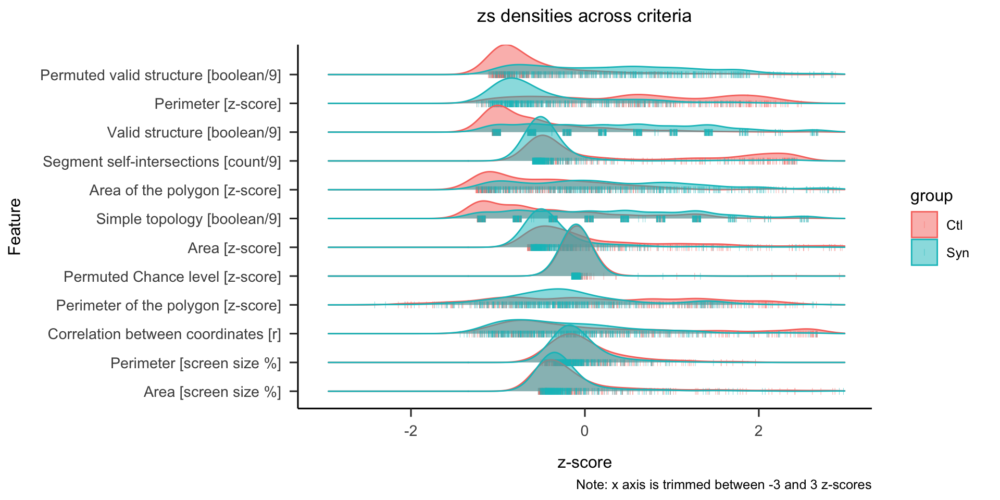
Figure 9: Density plots of all the features comparing SSS and controls
Discussion
Per dataset

Figure 10: Lineplots of AUC by data source
Laboratory vs online study?
Instructions or sampling biases?
- “However, they [controls] were instructed to vary the location for different stimuli.” (Rothen et al. 2016)
Conclusion
Spatial representations seem to follow topological rules
Long tradition in neuroscience to map: i.e. retinotopy, sonotopy or somatotopy (Eagleman and Goodale 2009)
Also for spatial mapping in general population ? i.e. number-space mapping?
Next step: stage 2
- Test permuted validity, area or perimeter best classify synesthetes vs controls from Chhavi.
Thanks for your attention!
Session Info
─ Session info ───────────────────────────────────────────────────────────────
setting value
version R version 4.5.2 (2025-10-31)
os macOS Tahoe 26.2
system aarch64, darwin20
ui X11
language (EN)
collate en_US.UTF-8
ctype en_US.UTF-8
tz Europe/Zurich
date 2026-02-04
pandoc 3.6.3 @ /Applications/RStudio.app/Contents/Resources/app/quarto/bin/tools/aarch64/ (via rmarkdown)
quarto 1.8.25 @ /Applications/RStudio.app/Contents/Resources/app/quarto/bin/quarto
─ Packages ───────────────────────────────────────────────────────────────────
package * version date (UTC) lib source
cellranger 1.1.0 2016-07-27 [1] CRAN (R 4.5.0)
class 7.3-23 2025-01-01 [2] CRAN (R 4.5.2)
classInt 0.4-11 2025-01-08 [1] CRAN (R 4.5.0)
cli 3.6.5 2025-04-23 [2] CRAN (R 4.5.0)
codetools 0.2-20 2024-03-31 [2] CRAN (R 4.5.2)
colorspace 2.1-2 2025-09-22 [1] CRAN (R 4.5.0)
DBI 1.2.3 2024-06-02 [1] CRAN (R 4.5.0)
dichromat 2.0-0.1 2022-05-02 [1] CRAN (R 4.4.0)
digest 0.6.37 2024-08-19 [2] CRAN (R 4.5.0)
dplyr * 1.1.4 2023-11-17 [1] CRAN (R 4.5.0)
e1071 1.7-16 2024-09-16 [1] CRAN (R 4.5.0)
evaluate 1.0.5 2025-08-27 [1] CRAN (R 4.5.0)
farver 2.1.2 2024-05-13 [1] CRAN (R 4.5.0)
fastmap 1.2.0 2024-05-15 [2] CRAN (R 4.5.0)
generics 0.1.4 2025-05-09 [1] CRAN (R 4.5.0)
ggalluvial * 0.12.5 2023-02-22 [1] CRAN (R 4.5.0)
ggplot2 * 4.0.1 2025-11-14 [1] CRAN (R 4.5.2)
ggridges * 0.5.7 2025-08-27 [1] CRAN (R 4.5.0)
ggthemes 5.1.0 2024-02-10 [1] CRAN (R 4.5.0)
glue 1.8.0 2024-09-30 [2] CRAN (R 4.5.0)
gridExtra * 2.3 2017-09-09 [1] CRAN (R 4.5.0)
gtable 0.3.6 2024-10-25 [1] CRAN (R 4.5.0)
hms 1.1.3 2023-03-21 [1] CRAN (R 4.5.0)
htmltools 0.5.8.1 2024-04-04 [2] CRAN (R 4.5.0)
jsonlite 2.0.0 2025-03-27 [2] CRAN (R 4.5.0)
kableExtra * 1.4.0 2024-01-24 [1] CRAN (R 4.5.0)
KernSmooth 2.23-26 2025-01-01 [2] CRAN (R 4.5.2)
knitr 1.50 2025-03-16 [2] CRAN (R 4.5.0)
labeling 0.4.3 2023-08-29 [1] CRAN (R 4.5.0)
lifecycle 1.0.4 2023-11-07 [2] CRAN (R 4.5.0)
lwgeom 0.2-14 2024-02-21 [1] CRAN (R 4.5.0)
magrittr 2.0.4 2025-09-12 [1] CRAN (R 4.5.0)
mapproj 1.2.11 2023-01-12 [1] CRAN (R 4.4.0)
maps 3.4.2.1 2024-11-10 [1] CRAN (R 4.4.1)
paletteer 1.6.0 2024-01-21 [1] CRAN (R 4.5.0)
pals 1.10 2025-03-07 [1] CRAN (R 4.5.0)
papaja * 0.1.3 2024-10-24 [1] CRAN (R 4.5.0)
pillar 1.10.2 2025-04-05 [1] CRAN (R 4.5.0)
pkgconfig 2.0.3 2019-09-22 [1] CRAN (R 4.5.0)
prismatic 1.1.2 2024-04-10 [1] CRAN (R 4.5.0)
pROC * 1.19.0.1 2025-07-31 [1] CRAN (R 4.5.0)
proxy 0.4-27 2022-06-09 [1] CRAN (R 4.5.0)
purrr 1.1.0 2025-07-10 [1] CRAN (R 4.5.0)
R6 2.6.1 2025-02-15 [2] CRAN (R 4.5.0)
RColorBrewer * 1.1-3 2022-04-03 [1] CRAN (R 4.5.0)
Rcpp 1.1.0 2025-07-02 [1] CRAN (R 4.5.0)
readr * 2.1.5 2024-01-10 [1] CRAN (R 4.5.0)
readxl * 1.4.5 2025-03-07 [1] CRAN (R 4.5.0)
rematch2 2.1.2 2020-05-01 [1] CRAN (R 4.5.0)
rlang 1.1.6 2025-04-11 [2] CRAN (R 4.5.0)
rmarkdown 2.29 2024-11-04 [2] CRAN (R 4.5.0)
rstudioapi 0.17.1 2024-10-22 [1] CRAN (R 4.5.0)
S7 0.2.0 2024-11-07 [1] CRAN (R 4.5.0)
scales 1.4.0 2025-04-24 [1] CRAN (R 4.5.0)
sessioninfo 1.2.3 2025-02-05 [1] CRAN (R 4.5.0)
sf * 1.0-21 2025-05-15 [1] CRAN (R 4.5.0)
stringi 1.8.7 2025-03-27 [1] CRAN (R 4.5.0)
stringr 1.5.1 2023-11-14 [1] CRAN (R 4.5.0)
svglite 2.2.2 2025-10-21 [1] CRAN (R 4.5.0)
systemfonts 1.3.1 2025-10-01 [1] CRAN (R 4.5.0)
textshaping 1.0.1 2025-05-01 [1] CRAN (R 4.5.0)
tibble 3.3.0 2025-06-08 [1] CRAN (R 4.5.0)
tidyr * 1.3.1 2024-01-24 [1] CRAN (R 4.5.0)
tidyselect 1.2.1 2024-03-11 [1] CRAN (R 4.5.0)
tinylabels * 0.2.5 2025-03-20 [1] CRAN (R 4.5.0)
tzdb 0.5.0 2025-03-15 [1] CRAN (R 4.5.0)
units 0.8-7 2025-03-11 [1] CRAN (R 4.5.0)
vctrs 0.6.5 2023-12-01 [1] CRAN (R 4.5.0)
viridisLite 0.4.2 2023-05-02 [1] CRAN (R 4.5.0)
webshot * 0.5.5 2023-06-26 [1] CRAN (R 4.5.0)
withr 3.0.2 2024-10-28 [1] CRAN (R 4.5.0)
xfun 0.52 2025-04-02 [2] CRAN (R 4.5.0)
xml2 1.5.0 2025-11-17 [1] CRAN (R 4.5.2)
yaml 2.3.10 2024-07-26 [2] CRAN (R 4.5.0)
[1] /Users/remylachelin/Library/R/arm64/4.5/library
[2] /Library/Frameworks/R.framework/Versions/4.5-arm64/Resources/library
* ── Packages attached to the search path.
──────────────────────────────────────────────────────────────────────────────Supplementary
Sample descriptives
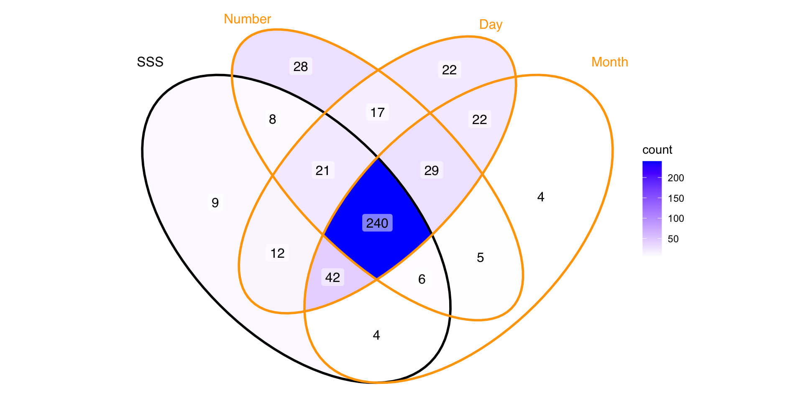
(a) Only data from Pr. Ward is represented here.
Topological simplicity
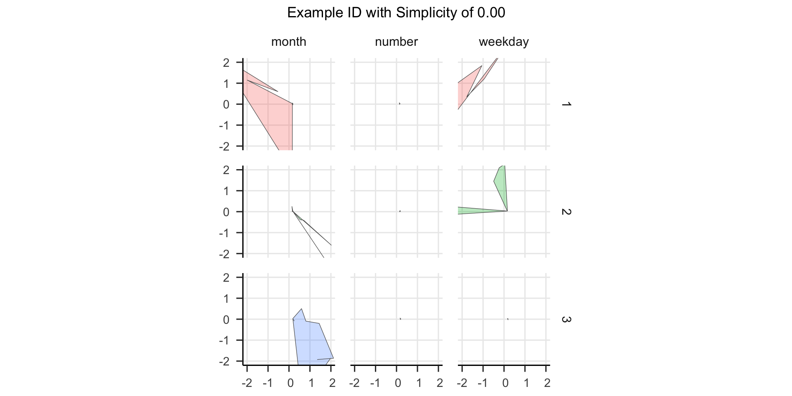
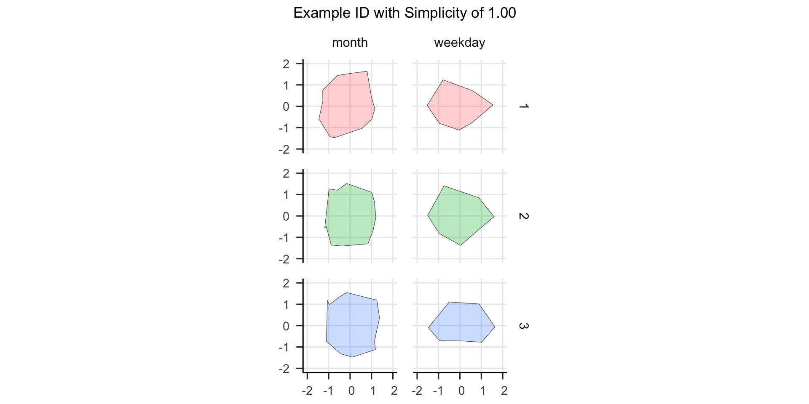
- each ring does not self-intersect or self-touch. Note that simplicity is a condition for validity: a polygon can be simple but still invalid (e.g., if an interior ring extends outside the exterior ring
% questionnaire: AUC and DP
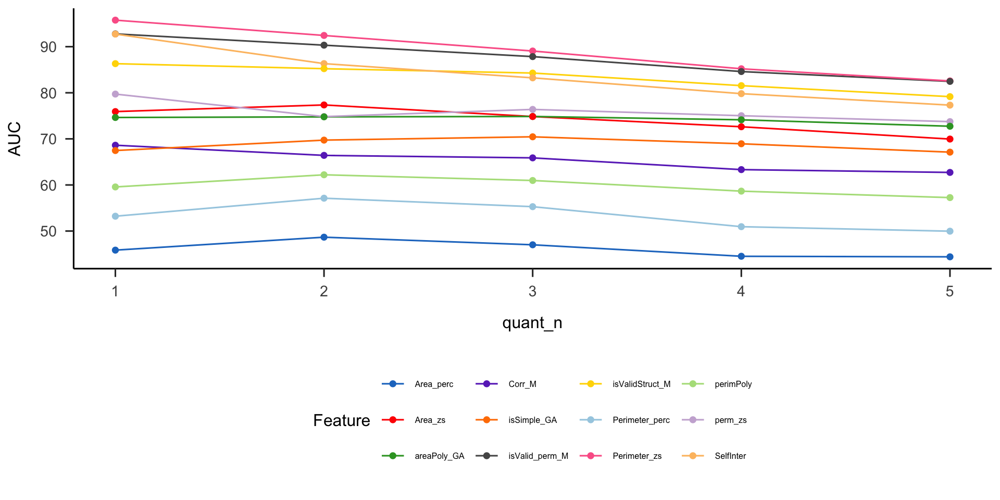
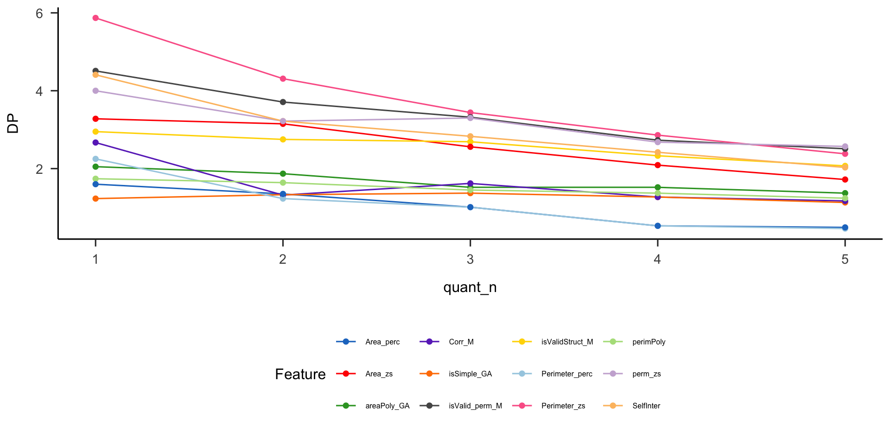
% questionnaire Sensitivity and Specificity
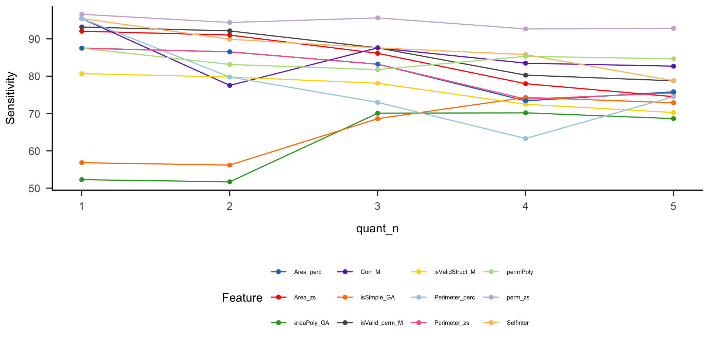
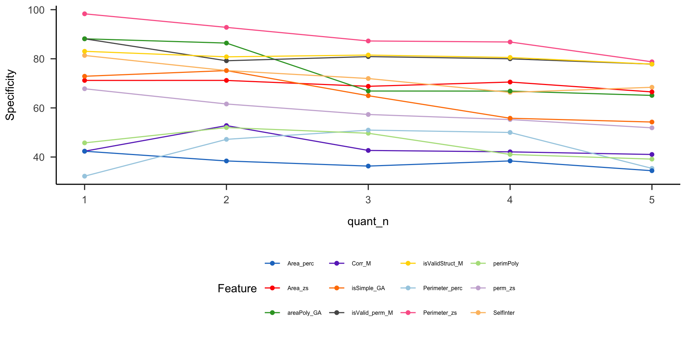
Data source: AUC and DP
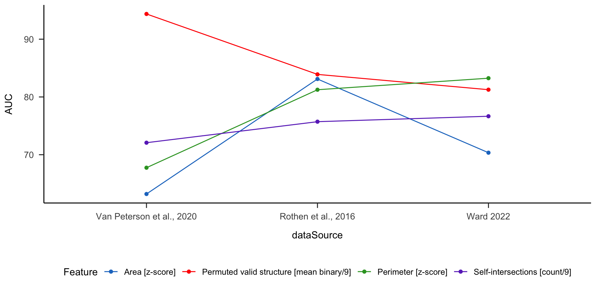
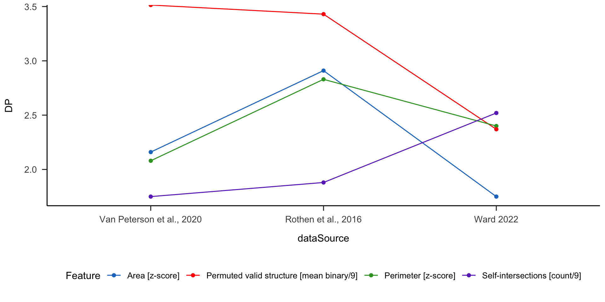
Data source: Sensitivity and Specificity
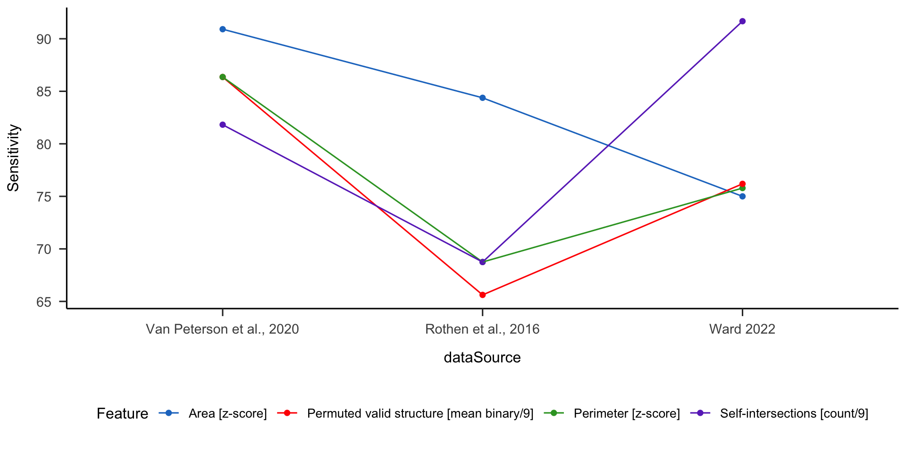
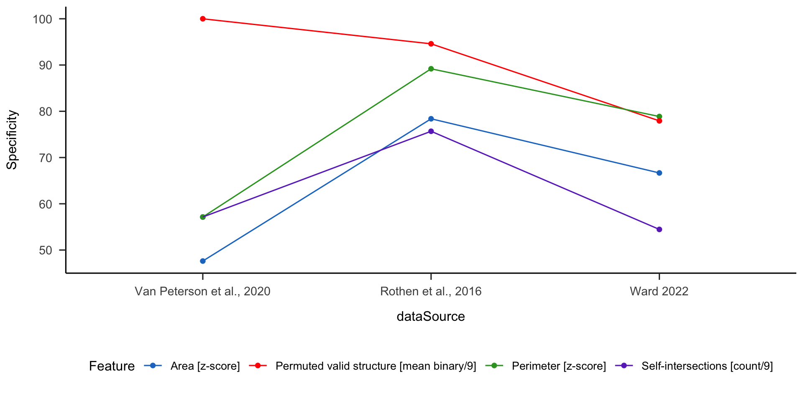
Per datasets table
Best AUC criteria differs by data sources.
| dataSource | Feature | Ctl | Syn |
|---|---|---|---|
| PeterCor | Perimeter_zs | 1.33 (0.79) | 0.84 (0.25) |
| Rothen | Perimeter_zs | 2.91 (1.37) | 1.41 (0.85) |
| Ward | Perimeter_zs | 3.66 (1.65) | 1.62 (1.20) |
| PeterCor | isValid_perm_M | 0.11 (0.10) | 0.59 (0.27) |
| Rothen | isValid_perm_M | 0.13 (0.16) | 0.40 (0.28) |
| Ward | isValid_perm_M | 0.11 (0.15) | 0.33 (0.24) |
Correlations
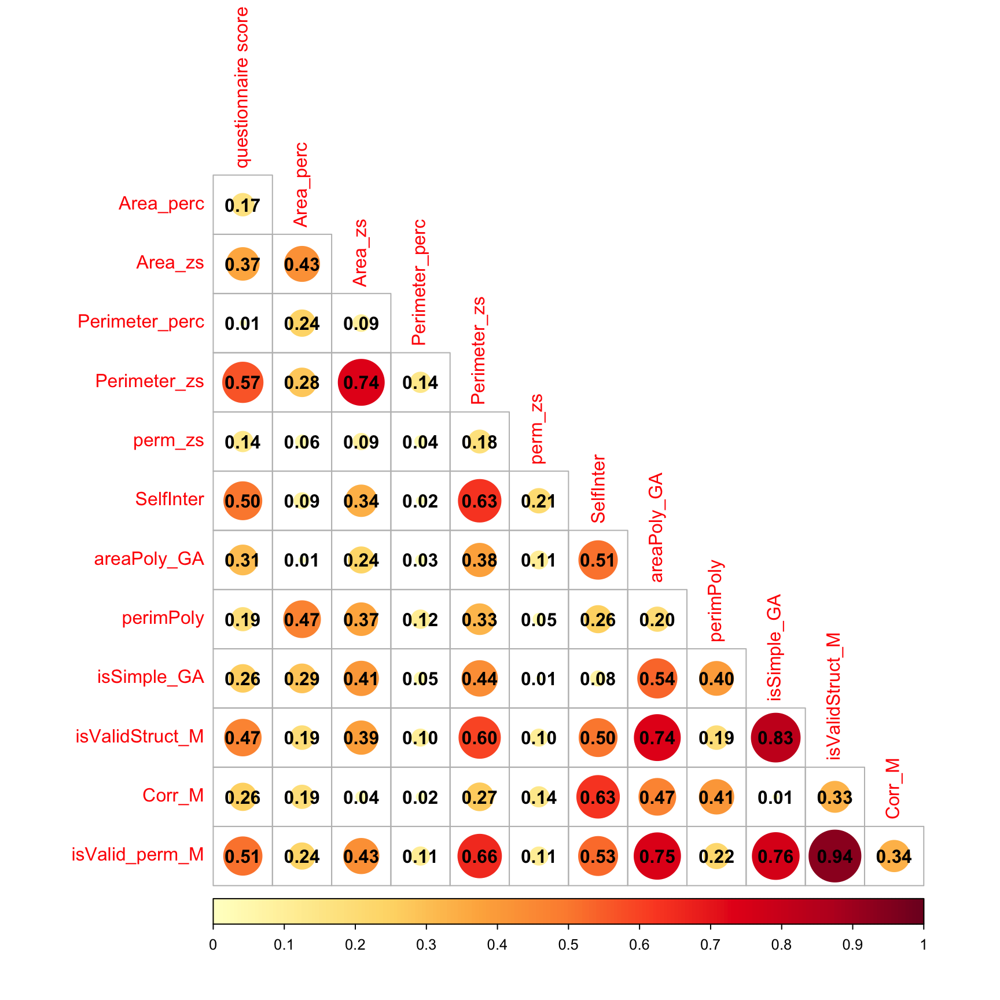
Figure 18: Correlation with self-reported questionnaire
The two highest correlations are indeed between the questionnaire score and perimeter (r = .58) and permuted validity (r = .50), see Figure 18.
Venn Pass Features
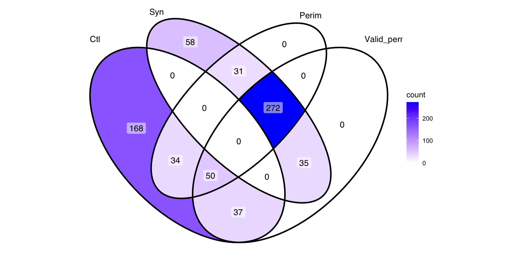